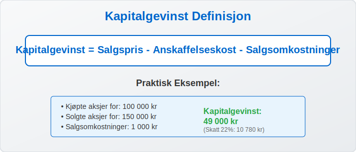
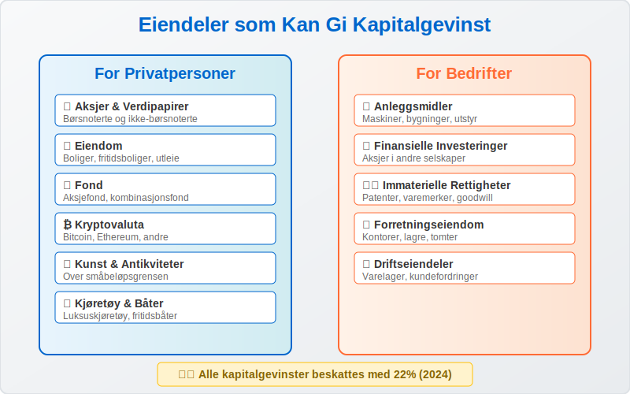
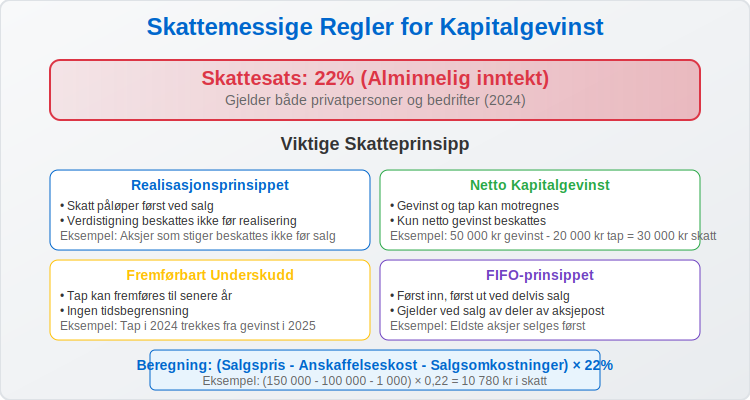
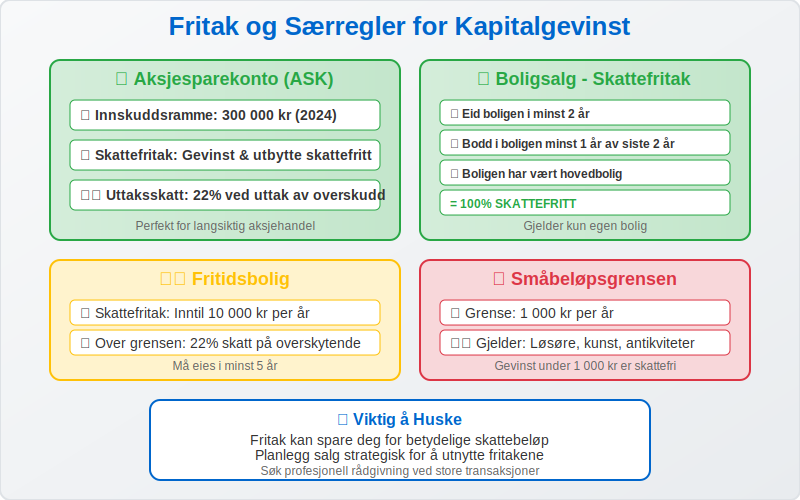
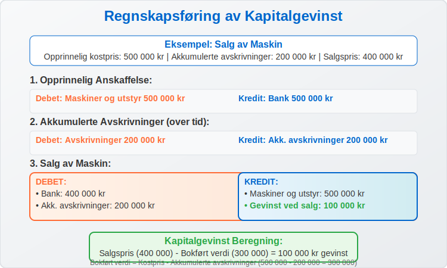
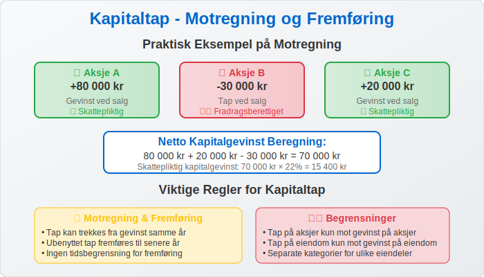
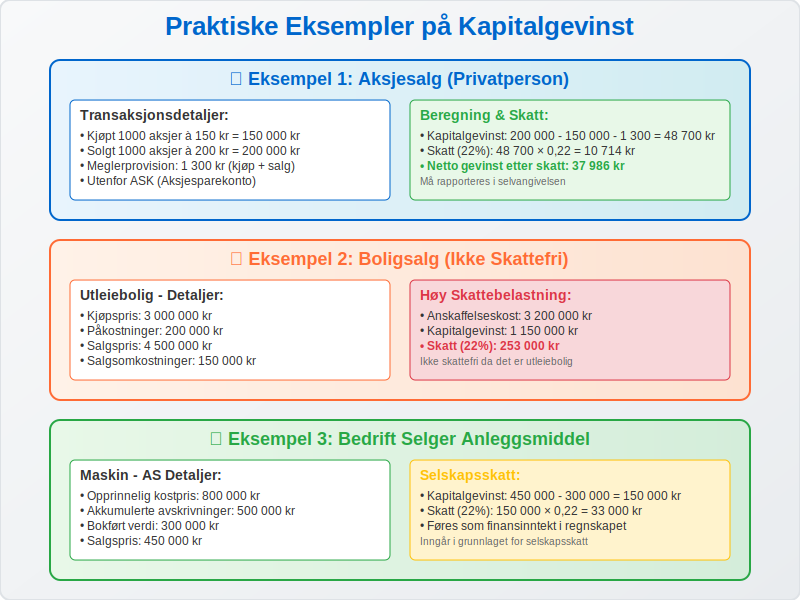
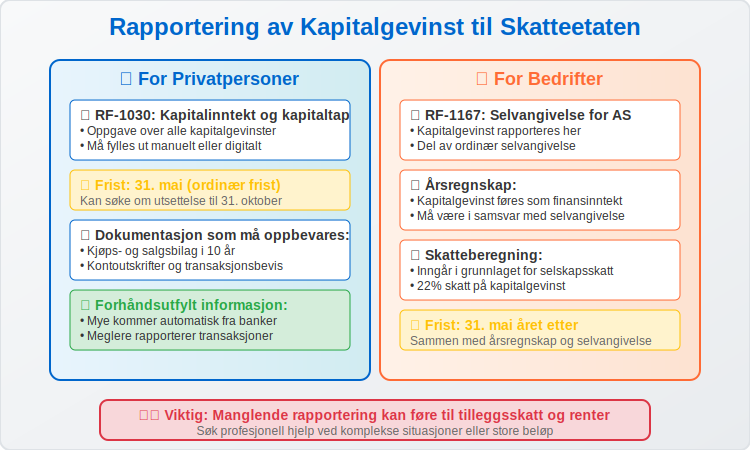
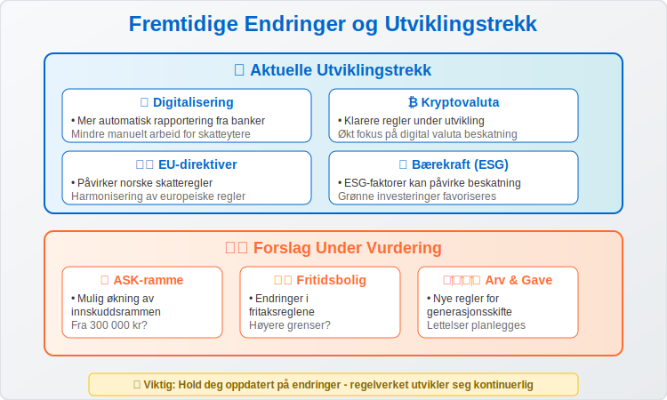

Kapitalgevinst er den positive differansen mellom salgsprisen og anskaffelseskostnaden når du selger en eiendel. I Norge er kapitalgevinst skattepliktig inntekt som må rapporteres til Skatteetaten, men det finnes viktige fritak og særregler som kan påvirke skattebetalingen betydelig. For aksjeinvesteringer gjelder spesielle skatteordninger som skjermingsfradrag og fritaksmetoden. Se vår Aksjonærmodellen - Komplett Guide til Norsk Aksjebeskatning for detaljert informasjon om beskatning av aksjegevinster.
For en oversikt over skatteregler spesifikt for aksjegevinster, se også vår Skatt på aksjegevinst.
Grunnlaget («inngangsverdi») for gevinstberegningen tilsvarer den opprinnelige kostprisen; se Inngangsverdi for mer informasjon.
Hva er Kapitalgevinst?
Kapitalgevinst oppstår når du selger en eiendel for mer enn det du opprinnelig betalte for den, justert for eventuelle påkostninger og avskrivninger.

Grunnleggende Formel:
Kapitalgevinst = Salgspris - Anskaffelseskost - Salgsomkostninger
Eksempel:
- Kjøpte aksjer for 100 000 kr
- Solgte aksjer for 150 000 kr
- Salgsomkostninger (meglerprovision): 1 000 kr
- Kapitalgevinst: 150 000 - 100 000 - 1 000 = 49 000 kr
Typer Eiendeler som Kan Gi Kapitalgevinst
Kapitalgevinst kan oppstå ved salg av mange forskjellige typer eiendeler, både for privatpersoner og bedrifter.

For Privatpersoner:
- Aksjer og verdipapirer: Børsnoterte og ikke-børsnoterte aksjer
- Eiendom: Boliger, fritidsboliger, utleieeiendommer
- Fond: Aksjefond, kombinasjonsfond, indeksfond
- Kryptovaluta: Bitcoin, Ethereum og andre digitale valutaer
- Kunst og antikviteter: Verdifulle gjenstander over visse beløpsgrenser
- Båter og kjøretøy: Luksuskjøretøy og fritidsbåter
For Bedrifter:
- Anleggsmidler: Maskiner, bygninger, utstyr
- Finansielle investeringer: Aksjer i andre selskaper
- Immaterielle rettigheter: Patenter, varemerker, goodwill
- Eiendom: Forretningseiendommer og tomter
Skattemessige Regler for Kapitalgevinst
Kapitalgevinst beskattes som alminnelig inntekt med en skattesats på 22% for 2024. Dette gjelder både for privatpersoner og bedrifter.

Viktige Skatteprinsipp:
| Prinsipp | Beskrivelse | Eksempel |
|---|---|---|
| Realisasjonsprinsippet | Skatt påløper først ved salg | Aksjer som stiger i verdi beskattes ikke før salg |
| Netto kapitalgevinst | Gevinst og tap kan motregnes | Gevinst 50 000 kr - tap 20 000 kr = skattepliktig 30 000 kr |
| Fremførbart underskudd | Tap kan fremføres til senere år | Tap i 2024 kan trekkes fra gevinst i 2025 |
| FIFO-prinsippet | Først inn, først ut ved delvis salg | Ved salg av deler av aksjepost |
Beregning av Skattepliktig Kapitalgevinst:
Skattepliktig kapitalgevinst = (Salgspris - Anskaffelseskost - Salgsomkostninger) × 22%
Fritak og Særregler
Det finnes flere viktige fritak og særregler som kan redusere eller eliminere skatten på kapitalgevinst.

Aksjesparekonto (ASK)
- Innskuddsramme: 300 000 kr (2024)
- Skattefritak: Gevinst og utbytte er skattefritt innenfor kontoen
- Uttaksskatt: 22% ved uttak av overskudd
Boligsalg - Skattefritak
Hovedregel: Gevinst ved salg av egen bolig er skattefri hvis:
- Du har eid boligen i minst 2 år
- Du har bodd i boligen i minst 1 år av de siste 2 årene
- Boligen har vært din hovedbolig
Fritidsbolig
- Skattefritak: Inntil 10 000 kr per år
- Over grensen: 22% skatt på beløp over 10 000 kr
- Eierperiode: Må eies i minst 5 år for full skattefrihet
Småbeløpsgrensen
- Grense: 1 000 kr per år
- Gjelder: Salg av løsøre, kunst, antikviteter
- Skattefritt: Gevinst under 1 000 kr beskattes ikke
Regnskapsføring av Kapitalgevinst
For bedrifter må kapitalgevinst regnskapsføres korrekt i henhold til god regnskapsskikk.

Bokføringseksempel - Salg av Anleggsmiddel:
Opprinnelig anskaffelse (maskin for 500 000 kr):
Debet: Maskiner og utstyr 500 000
Kredit: Bank 500 000
Akkumulerte avskrivninger (200 000 kr):
Debet: Avskrivninger 200 000
Kredit: Akk. avskrivninger 200 000
Salg for 400 000 kr (bokført verdi 300 000 kr):
Debet: Bank 400 000
Debet: Akk. avskrivninger 200 000
Kredit: Maskiner og utstyr 500 000
Kredit: Gevinst ved salg 100 000
Kapitalgevinst: 400 000 - 300 000 = 100 000 kr
Kapitaltap - Motregning og Fremføring
Når du selger eiendeler med tap, kan dette brukes til å redusere skattepliktig kapitalgevinst.

Regler for Kapitaltap:
- Motregning: Tap kan trekkes fra gevinst samme år
- Fremføring: Ubenyttet tap fremføres til senere år
- Tidsbegrensning: Ingen tidsbegrensning for fremføring
- Begrensninger: Tap på aksjer kan kun motregnes mot gevinst på aksjer
Eksempel på Motregning:
| Transaksjon | Beløp | Resultat |
|---|---|---|
| Solgte Aksje A | +80 000 kr | Gevinst |
| Solgte Aksje B | -30 000 kr | Tap |
| Solgte Aksje C | +20 000 kr | Gevinst |
| Netto kapitalgevinst | 70 000 kr | Skattepliktig |
Praktiske Eksempler
La oss se på konkrete eksempler på hvordan kapitalgevinst beregnes og beskattes i ulike situasjoner.

Eksempel 1: Aksjesalg
Situasjon: Privatperson selger aksjer utenfor ASK
Detaljer:
- Kjøpt 1000 aksjer à 150 kr = 150 000 kr
- Solgt 1000 aksjer à 200 kr = 200 000 kr
- Meglerprovision: 500 kr (kjøp) + 800 kr (salg) = 1 300 kr
Beregning:
- Kapitalgevinst: 200 000 - 150 000 - 1 300 = 48 700 kr
- Skatt (22%): 48 700 × 0,22 = 10 714 kr
Eksempel 2: Boligsalg (Ikke Skattefri)
Situasjon: Salg av utleiebolig
Detaljer:
- Kjøpspris: 3 000 000 kr
- Påkostninger: 200 000 kr
- Salgspris: 4 500 000 kr
- Salgsomkostninger: 150 000 kr
Beregning:
- Anskaffelseskost: 3 000 000 + 200 000 = 3 200 000 kr
- Kapitalgevinst: 4 500 000 - 3 200 000 - 150 000 = 1 150 000 kr
- Skatt (22%): 1 150 000 × 0,22 = 253 000 kr
Eksempel 3: Bedrift Selger Anleggsmiddel
Situasjon: Aksjeselskap selger maskin
Detaljer:
- Opprinnelig kostpris: 800 000 kr
- Akkumulerte avskrivninger: 500 000 kr
- Bokført verdi: 300 000 kr
- Salgspris: 450 000 kr
Beregning:
- Kapitalgevinst: 450 000 - 300 000 = 150 000 kr
- Skatt (22%): 150 000 × 0,22 = 33 000 kr
Rapportering til Skatteetaten
Kapitalgevinst må rapporteres korrekt i selvangivelsen eller årsregnskapet.

For Privatpersoner:
- RF-1030: Oppgave over kapitalinntekt og kapitaltap
- Frist: 31. mai (ordinær frist)
- Dokumentasjon: Oppbevar kjøps- og salgsbilag i 10 år
- Forhåndsutfylt: Mye informasjon kommer automatisk fra banker/meglere
For Bedrifter:
- RF-1167: Selvangivelse for aksjeselskap
- Årsregnskap: Kapitalgevinst føres som finansinntekt
- Skatteberegning: Inngår i grunnlaget for selskapsskatt
Strategier for Skatteoptimalisering
Det finnes lovlige metoder for å optimalisere skatten på kapitalgevinst.

Lovlige Strategier:
- Aksjesparekonto: Maksimer bruken av ASK-rammen
- Tap og gevinst: Realiser tap og gevinst strategisk
- Tidspunkt: Vurder tidspunkt for salg (årsskifte)
- Boligsalg: Sørg for å oppfylle kravene til skattefritak
- Gave/arv: Vurder overføring til familie
Viktige Advarsler:
- Proforma-transaksjoner: Unngå kunstige transaksjoner
- Skatteunngåelse: Hold deg innenfor lovens rammer
- Rådgivning: Søk profesjonell hjelp ved komplekse situasjoner
Internasjonale Forhold
Ved salg av utenlandske eiendeler eller for personer bosatt i utlandet gjelder særlige regler.
Skatteavtaler:
- Dobbeltbeskatning: Norge har skatteavtaler med mange land
- Kildeskatt: Kan påløpe i utlandet
- Fradrag: Utenlandsk skatt kan gi fradrag i Norge
Rapporteringsplikt:
- Utenlandske aksjer: Må rapporteres hvis verdi over 200 000 kr
- Utenlandsk eiendom: Særlige rapporteringskrav
- Kontrolloppgave: Banker rapporterer automatisk til Skatteetaten
Fremtidige Endringer og Utviklingstrekk
Regelverket for kapitalgevinst endres jevnlig, og det er viktig å holde seg oppdatert.

Aktuelle Utviklingstrekk:
- Digitalisering: Mer automatisk rapportering
- Kryptovaluta: Klarere regler under utvikling
- EU-direktiver: Påvirker norske regler
- Bærekraft: ESG-faktorer kan påvirke beskatning
Forslag Under Vurdering:
- ASK-ramme: Mulig økning av innskuddsrammen
- Fritidsbolig: Endringer i fritaksreglene
- Arv og gave: Nye regler for generasjonsskifte
Konklusjon
Kapitalgevinst er et viktig skattemessig begrep som påvirker både privatpersoner og bedrifter. Med en skattesats på 22% kan skatten bli betydelig, men gjennom kunnskap om fritak, særregler og lovlige optimaliseringsstrategier kan du minimere skattebelastningen.
Viktigste Punkter å Huske:
- Kapitalgevinst beskattes som alminnelig inntekt (22%)
- Flere fritak finnes, spesielt for boligsalg og ASK
- Tap kan motregnes mot gevinst
- Korrekt dokumentasjon er avgjørende
- Søk profesjonell rådgivning ved komplekse situasjoner
Ved å forstå reglene for kapitalgevinst kan du ta informerte beslutninger om investeringer og salg av eiendeler, samtidig som du sikrer korrekt rapportering til Skatteetaten.
For aksjeinvesteringer anbefaler vi at du også setter deg inn i Aksjonærmodellen - Komplett Guide til Norsk Aksjebeskatning for å få full oversikt over alle skatteordninger som kan påvirke din skattebyrde ved aksjegevinster.